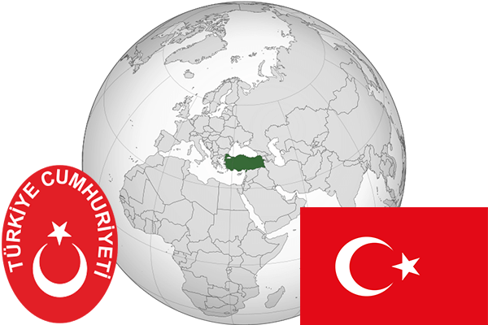

To`liq nomi: Turkiya Respublikasi
Region: Janubiy Yevropa
Qonunchilik shakli: Respublika
Mustaqillik kuni: 29 Oktabr 1923-yil
Poytaxt: Anqara
Maydoni: 783,562 km²
Chegaradosh davlatlari: Gruziya, Armeniya, Ozarbayjon, Eron, Iroq, Suriya, Gretsiya, Bolgariya
Aholisi: 79 463 663 (2016-yil)
Aholi zichligi: 97 /км²
Aholining o`rtacha yoshi: 75,43 yil
Rasmiy tili: Turk tili
Dini: Islom
Pul birligi: Turkiya lirasi
Telefon prefiksi: +90
Internet domen: .tr
Xalqaro tashkilotlarga a`zoligi: BMT
Dengiz va okeanlarga chiqishi: Qora dengiz, O’rta Yer dengizi
YIM: Butun: $734 mlrd(2015-yil)
Yirik shaharlari: Istanbul, Izmir, Anqara, Antalya, Bursa